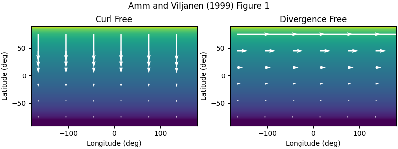

Note
Go to the end to download the full example code.
Current surfaces#
This example demonstrates the resulting current surfaces from the curl-free and divergence-free SEC poles.
import matplotlib.pyplot as plt
import numpy as np
from matplotlib.colors import LogNorm
from pysecs import SECS
# Radius of Earth
R_E = 6378e3
# Pole of the current system at the North Pole
sec_loc = np.array([90.0, 0.0, R_E + 100e3])
# Set up the system with a single SEC
system_df = SECS(sec_df_loc=sec_loc)
system_cf = SECS(sec_cf_loc=sec_loc)
# Fit unit currents since we aren't fitting to any data
system_df.fit_unit_currents()
system_cf.fit_unit_currents()
# Scale the system corresponding to Figure 2 of
# Amm and Viljannen (1999) doi:10.1186/BF03352247
# 10 kA
total_current = 10000
system_df.sec_amps *= total_current
system_cf.sec_amps *= total_current
# Create prediction surface
delta = 1
lat_min, lat_max = -90, 90
lon_min, lon_max = -180, 180
lats = np.arange(lat_min, lat_max, delta)
lons = np.arange(lon_min, lon_max, delta)
lats2 = np.arange(lat_min - delta / 2, lat_max + delta / 2, delta)
lons2 = np.arange(lon_min - delta / 2, lon_max + delta / 2, delta)
nlat = len(lats)
nlon = len(lons)
xx, yy = np.meshgrid(lons, lats)
xx2, yy2 = np.meshgrid(lons2, lats2)
points = np.zeros((nlat * nlon, 3))
points[:, 0] = yy.ravel()
points[:, 1] = xx.ravel()
points[:, 2] = R_E
shell_points = points.copy()
shell_points[:, 2] = sec_loc[2]
# Predict the currents
J_df = system_df.predict(shell_points, J=True)
J_cf = system_cf.predict(shell_points, J=True)
J_df_x = J_df[:, 0].reshape(nlat, nlon)
J_df_y = J_df[:, 1].reshape(nlat, nlon)
J_df_phi = np.linalg.norm(J_df[:, :2], axis=1).reshape(nlat, nlon)
J_df_r = J_df[:, 2].reshape(nlat, nlon)
J_cf_x = J_cf[:, 0].reshape(nlat, nlon)
J_cf_y = J_cf[:, 1].reshape(nlat, nlon)
J_cf_theta = np.linalg.norm(J_cf[:, :2], axis=1).reshape(nlat, nlon)
J_cf_r = J_cf[:, 2].reshape(nlat, nlon)
fig, (ax_cf, ax_df) = plt.subplots(figsize=(8, 3), ncols=2, constrained_layout=True)
fig.suptitle("Amm and Viljanen (1999) Figure 1")
# Limit quiver to only a few points
nstep = 30
norm = LogNorm(vmin=1e-5, vmax=1e-2)
cax = ax_cf.pcolormesh(xx2, yy2, J_cf_theta, norm=norm)
ax_cf.quiver(
xx[nstep // 2 :: nstep, nstep // 2 :: nstep * 2],
yy[nstep // 2 :: nstep, nstep // 2 :: nstep * 2],
J_cf_y[nstep // 2 :: nstep, nstep // 2 :: nstep * 2],
J_cf_x[nstep // 2 :: nstep, nstep // 2 :: nstep * 2],
color="w",
zorder=9,
)
ax_cf.set_ylabel("Latitude (deg)")
ax_cf.set_xlabel("Longitude (deg)")
cax = ax_df.pcolormesh(xx2, yy2, J_df_phi, norm=norm)
ax_df.quiver(
xx[nstep // 2 :: nstep, nstep // 2 :: nstep * 2],
yy[nstep // 2 :: nstep, nstep // 2 :: nstep * 2],
J_df_y[nstep // 2 :: nstep, nstep // 2 :: nstep * 2],
J_df_x[nstep // 2 :: nstep, nstep // 2 :: nstep * 2],
color="w",
zorder=9,
)
ax_df.set_ylabel("Latitude (deg)")
ax_df.set_xlabel("Longitude (deg)")
ax_cf.set_title("Curl Free")
ax_df.set_title("Divergence Free")
plt.show()
Total running time of the script: (0 minutes 0.307 seconds)